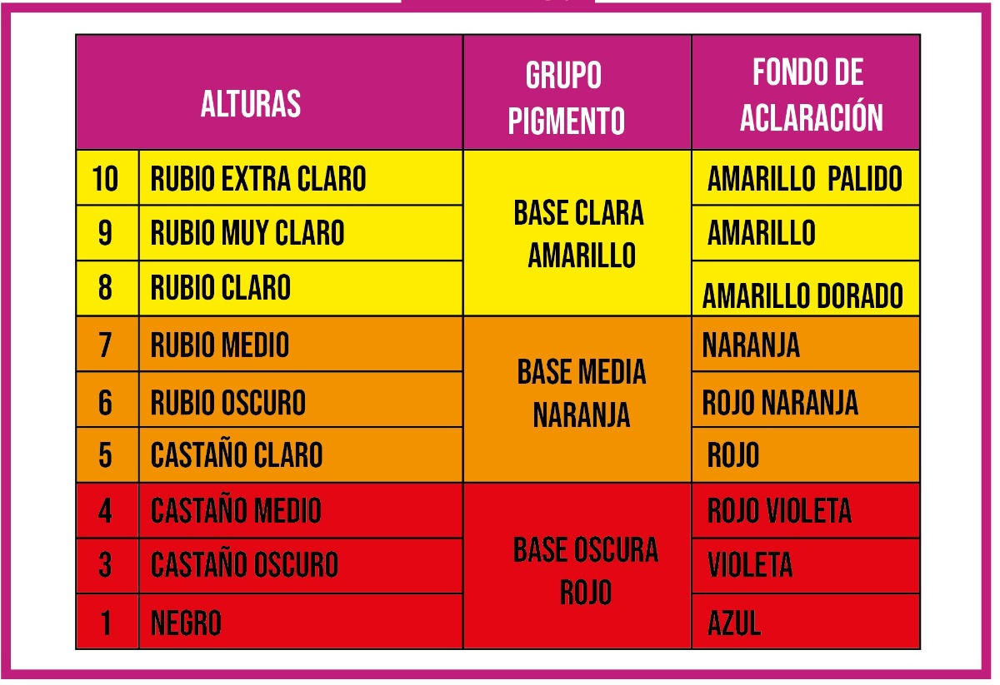
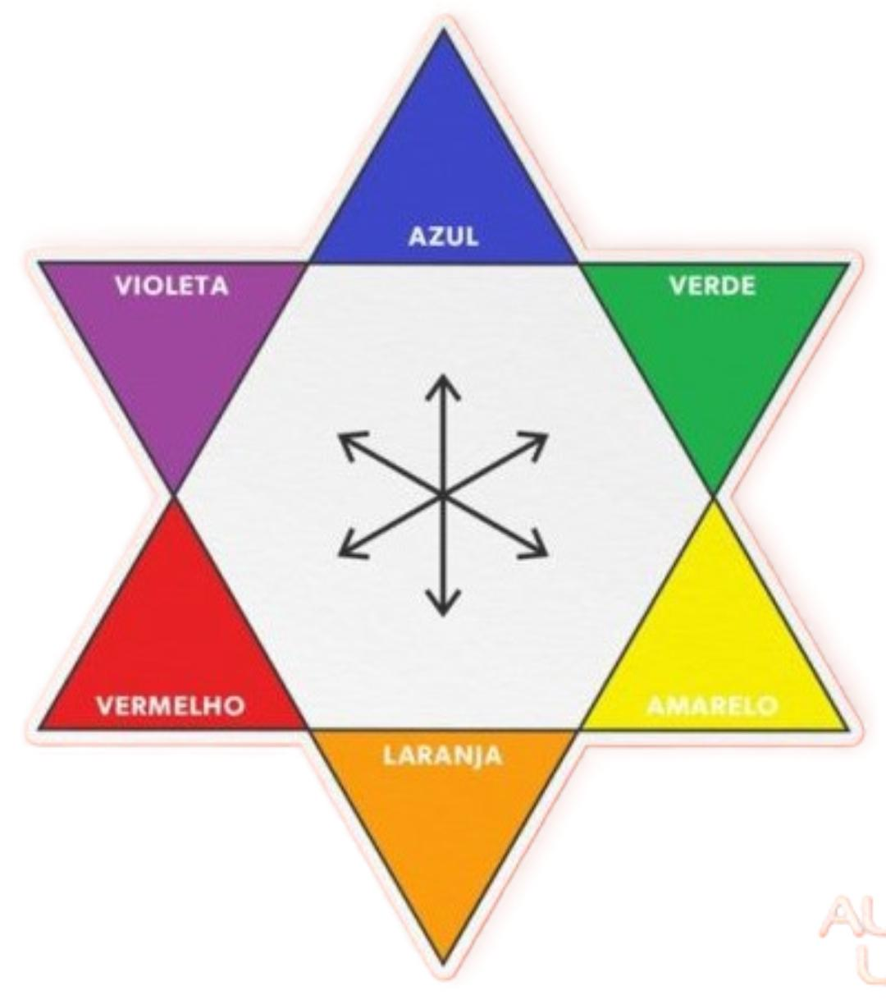

COLORACIÓN
TIPOS DE COLORACIÓN Y FACTORES QUE INFLUYEN EN SU ELECCIÓN
- Coloración directa (no aclara el cabello, se va con los lavados)
- Oscurecer
- Dar brillo
- Colores fantasía
- Coloración semipermanente (efecto maquillado en primeras canas).
- Durabilidad :4/6 lavados
- Oscurecer
- Matizar colores indeseados
- Coloración permanente (cubre cana)
- Mezcla con H2O2 a 20vol, aclara 2 tonos;
- Mezcla con H2O2 a 30vol, aclara 3 tonos.
- Aplicado con H2O2 a 10vol, aclara 1 tono
- Los tintes super-aclarantes (no cubren cana), se aplican con H2O2 a 40vol y aclara 4 tonos
- Decoloración: aclaración máxima del cabello (H2O2 de 10vol, 20vol, 30vol ). Técnicas:
- Total: aplicación global, barrido, decapage
- Parcial: mechas ( balayage, babylight, ombre, californiana, counturing...)
IMPORTANTE: Para un resultado óptimo del color final, siempre en el diagnóstico previo hemos de contar con el fondo de aclaración que va a sufrir, tanto el cabello natural, como el tratado químicamente.

Este fondo de aclaración determina el reflejo que tenemos que aplicar para neutralizarlo en caso necesario.
El color opuesto en la estrella de Oswald es el color que lo neutraliza.

AZUL= 1 // VIOLE TA=2 // VERDE= 7
Estos matices son reflejos fríos , neutralizan reflejos cálidos
AMARILLO=3 // NARANJA= 4 // ROJO= 6
Estos matices son reflejos cálidos, neutralizan reflejos fríos
- Ejemplo: -
- Aplicar un tinte rubio oscuro (6), sobre una base castaño claro (5) sin canas.
- 5----- fondo de aclaración -----ROJO -NARANJA---neutralizar -----VERDE-AZUL
- Solución Aplicaremos 6.1 a 20 vol.
Explicación:
Necesitamos aclarar la base 5 un tono para conseguir la base 6 deseada; fondo de aclaración rojo-naranja que se neutraliza con un reflejo frío, por lo tanto ceniza.
El H2O2 será de 20vol ya que los tonos fríos oscurecen por si mismos 1/2 tono; si utilizáramos 10vol quedaría oscuro